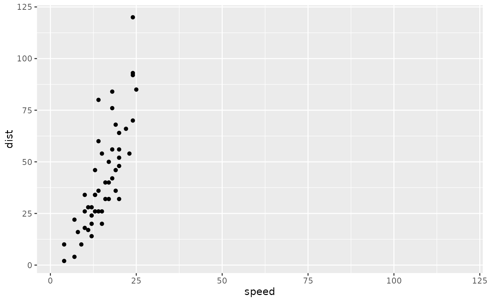
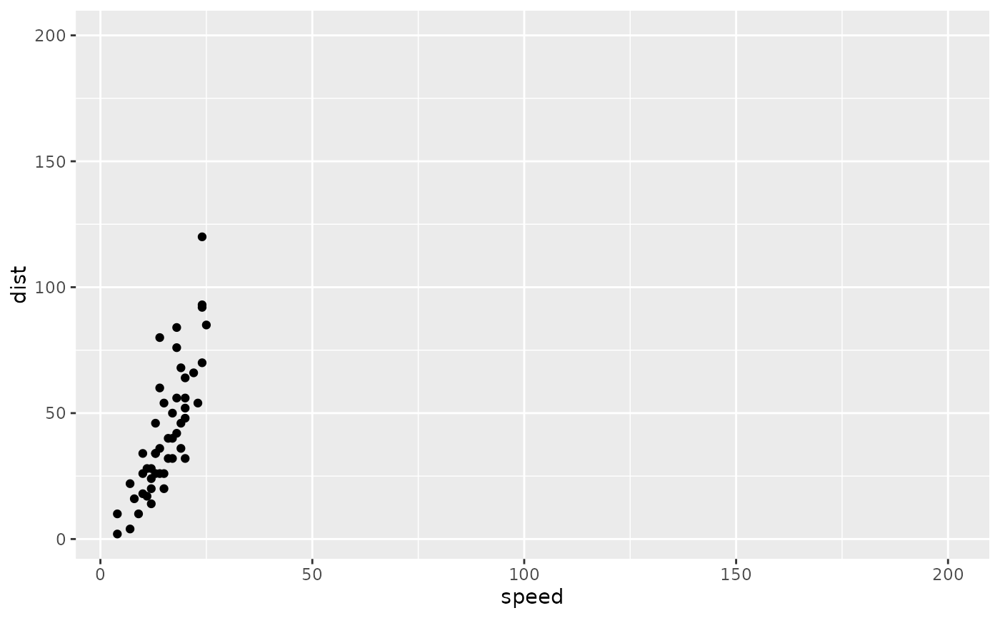
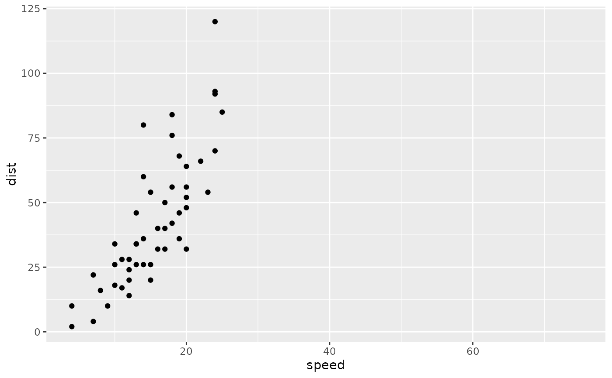
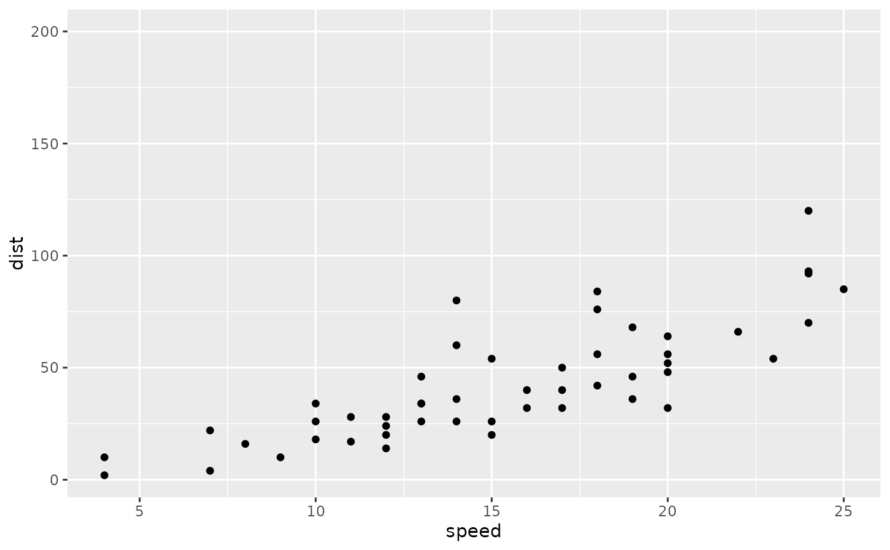
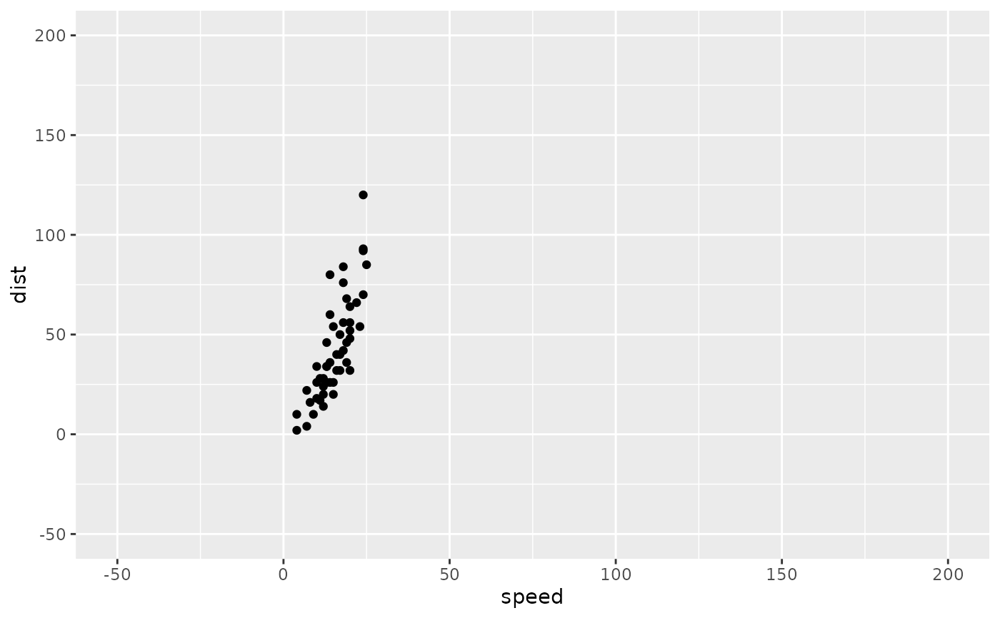
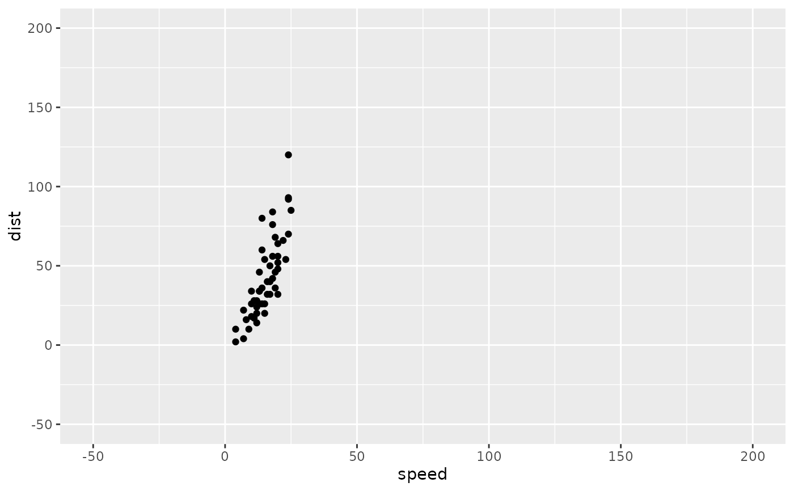

Manage axis limits.
Fix axis limits to be equal between x- and y-axes,
and/or expand axis coordinates.
The primary use of axis_limits
is forcing the x- and y-axes
to have the same limits "automatically"
(i.e. by inspecting the ggplot object,
thus not requiring the user to manually
calculate limits to pass to ggplot2::expand_limits).
Arguments
- p
object of class 'ggplot'. Limits are adjusted for this plot.
- limits_expand
list. If not
NULL, then it is (effectively) passed ontoggplot2::expand_limitsto ensure that certain values are included in the plot (such as, for example, 0 if that is the minimum value possible but it may not be plotted). If not named, then # nolint must consist of one numeric vector that will then force all values in the numeric value # nolint to be included in the plot. If named, then must have namesxand/ory, # nolint with the elements again being numeric vectors that must be included in plot.- limits_equal
logical. If
TRUE, then the ranges on the x- and y-axes # nolint must be equal. Effectively applied after expand_grid is applied. Default isFALSE. # nolint
Examples
data("cars", package = "datasets")
library(ggplot2)
p <- ggplot(cars, aes(speed, dist)) +
geom_point()
axis_limits(
p,
limits_equal = TRUE
)

# both axes
axis_limits(
p,
limits_expand = list(200)
)

# x only
axis_limits(
p,
limits_expand = list(x = 75)
)

# y only
axis_limits(
p,
limits_expand = list(y = 200)
)

# lower and upper expansion
axis_limits(
p,
limits_expand = list(
y = c(-50, 200),
x = c(-10, 75)
)
)
 # note that when fixing range and expanding, range is fixed
# after expansions are applied, so effectively the larger expansions apply to both.
# compare the following output to the previous output:
axis_limits(
p,
limits_expand = list(
y = c(-50, 200),
x = c(-10, 75)
),
limits_equal = TRUE
)

# note that when fixing range and expanding, range is fixed
# after expansions are applied, so effectively the larger expansions apply to both.
# compare the following output to the previous output:
axis_limits(
p,
limits_expand = list(
y = c(-50, 200),
x = c(-10, 75)
),
limits_equal = TRUE
)
